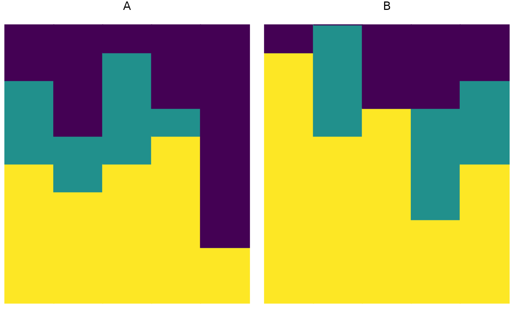
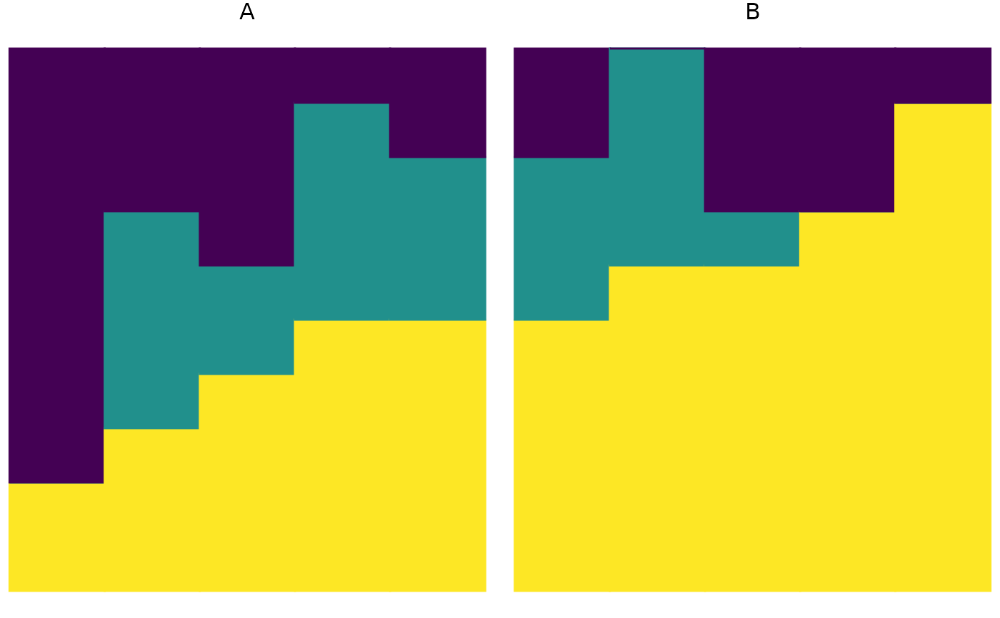

Visualize a relative abundance matrix as a stacked bar plot.
Source:R/visualize_fava.R
plot_relabund.RdThis function enables graphical visualization of a matrix of compostional data. In the output plot, each vertical bar represents a single vector; the height of each color in the bar corresponds to the abundance of each category in that vector. Because this function produces a ggplot object, its output can be modified using standard ggplot2 syntax.
Arguments
- relab_matrix
A matrix with
I=nrow(relab_matrix)rows, each containingK=ncol(relab_matrix)non-negative entries that sum to 1. Ifrelab_matrixcontains any metadata, it must be on the left-hand side of the matrix and the number of entries that sum to 1 (K) must be specified.- group
Optional; a string specifying the name of the column that describes which group each row (sample) belongs to. Use if
matricesis a single matrix containing multiple groups of samples you wish to compare.- time
Optional; a string specifying the name of the column that describes the sampling time for each row. Include if you wish to weight FAVA by the distance between samples.
- w
Optional; a vector of length
Iwith non-negative entries that sum to 1. Entryw[i]represents the weight placed on rowiin the computation of the mean abundance of each category across rows. The default value isw = rep(1/nrow(relab_matrix), nrow(relab_matrix)).- K
Optional; an integer specifying the number of categories in the data. Default is
K=ncol(relab_matrix).- arrange
Optional; controls horizontal ordering of samples and vertical ordering of categories. If
arrange = TRUEorarrange = "both", samples are ordered by the categories of greatest abundance and categories are ordered in decreasing abundance. Ifarrange = "vertical", sample order is unchanged but categories are ordered in decreasing abundance. Ifarrange = "horizontal", samples are ordered by the most abundant categories, but category order is unchanged. Ifarrangeis missing orarrange = FALSE, neither order is changed.
Examples
# Make an example matrix of compositional data
# Each row is an individual. Rows sum to 1.
population_A = matrix(c(
.5, .3, .2,
.4, .2, .4,
.5, .4, .1,
.6, .1, .3,
.2, 0, .8
),
nrow = 5,
byrow = TRUE
)
plot_relabund(relab_matrix = population_A,
K = 3, # How many categories per vector?
arrange = FALSE
)
plot_relabund(relab_matrix = population_A,
K = 3, # How many categories per vector?
arrange = "horizontal"
)
plot_relabund(relab_matrix = population_A,
K = 3, # How many categories per vector?
arrange = "vertical"
)
plot_relabund(relab_matrix = population_A,
K = 3, # How many categories per vector?
arrange = TRUE # could also be "both"
)
# You can modify the plot as you would any ggplot2 object
plot_relabund(relab_matrix = population_A,
K = 3, # How many categories per vector?
arrange = TRUE
) +
# Below are example, optional modifications to the default plot
ggplot2::ggtitle("Population A") +
ggplot2::scale_fill_brewer("Blues") +
ggplot2::scale_color_brewer("Blues") +
ggplot2::xlab("Individuals")
# Note that both scale_fill and scale_color are needed to change the color of the bars.
# Plot a dataset which has 2 populations
population_B = matrix(c(
.9, 0, .1,
.6, .4, 0,
.7, 0, .3,
.3, .4, .3,
.5, .3, .2
),
nrow = 5,
byrow = TRUE
)
populations_AB = cbind(data.frame(c("A", "A", "A", "A", "A",
"B", "B", "B", "B", "B")),
rbind(population_A, population_B))
colnames(populations_AB) = c("population", "category_1", "category_2", "category_3")
plot_relabund(relab_matrix = populations_AB, group = "population")

plot_relabund(relab_matrix = populations_AB, group = "population", arrange = "vertical")
plot_relabund(relab_matrix = populations_AB, group = "population", arrange = "horizontal")

plot_relabund(relab_matrix = populations_AB, group = "population", arrange = "both")